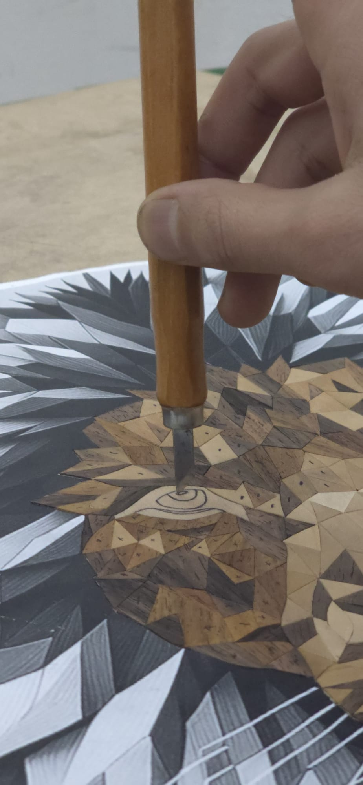
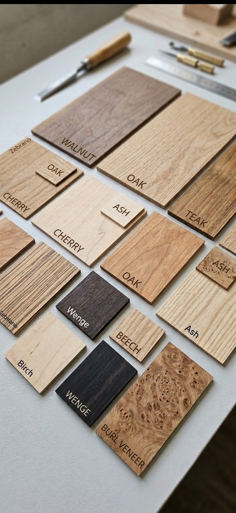
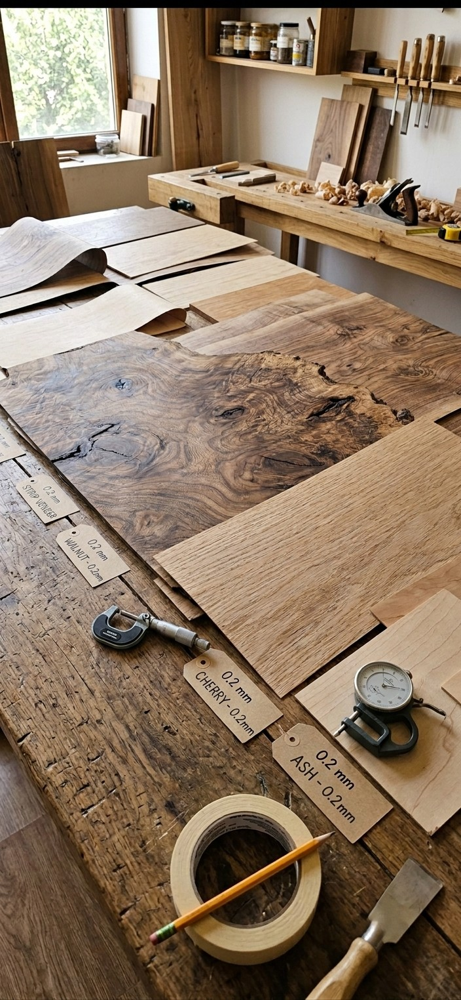

Why Marquetry Takes Weeks, Not Hours
Every VaCa Marquetry piece is built from natural wood veneer, hand-selected and hand-cut, piece by piece — no laser templates, no shortcuts.
From Concept to Finished Piece
Photo & Concept
Every piece begins with a reference image and a composition plan.
Wood Selection
Veneers are chosen for grain, tone, and color to match the composition's needs.
Hand-Cutting Each Piece
Every individual piece is cut by hand — a single portrait may require 400 to 900+ pieces.
Fitting & Assembly
Each piece is fitted into place, building the image piece by piece like a mosaic.
Sanding & Finishing
The surface is sanded smooth and finished with a protective coat for long-lasting durability.
Framing
The completed work is framed and prepared for photography, certification, and shipping.
Wood Species Glossary
Walnut
Rich, dark tones used for depth and contrast.
Oak
Strong visible grain, often used for texture and structure.
Maple
Pale, fine grain — used for highlights and light tones.
Wenge & Mahogany
Deep, warm tones for shadow and dramatic contrast.
The Process in Photographs
Freehand cutting — no laser, no template

Each piece selected individually for grain and tone

Construction in progress — the portrait emerges piece by piece

The tools: knife, mat, and twenty-five years of practice

Veneer selection — each species carries a different light

The palette is entirely natural — ash to wenge